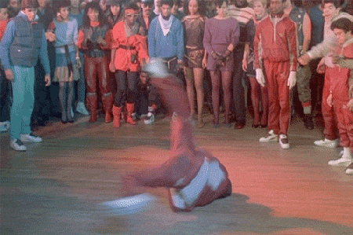

Start
Pause
RULES
- Press play to listen to the song, then choose which rapper you think is behind the track!
- CAUTION! Once you begin your selection or when the song is complete the timer will begin!
RAP ARTIST
21 Savage
Theophilus London
Big Baby DRAM
Tyga
Freddie Gibbs
